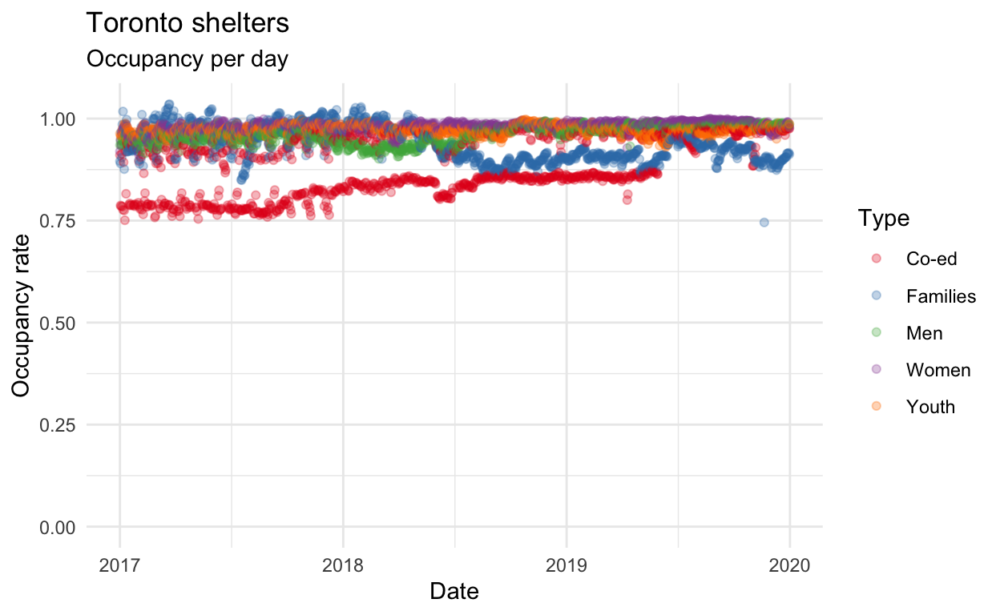
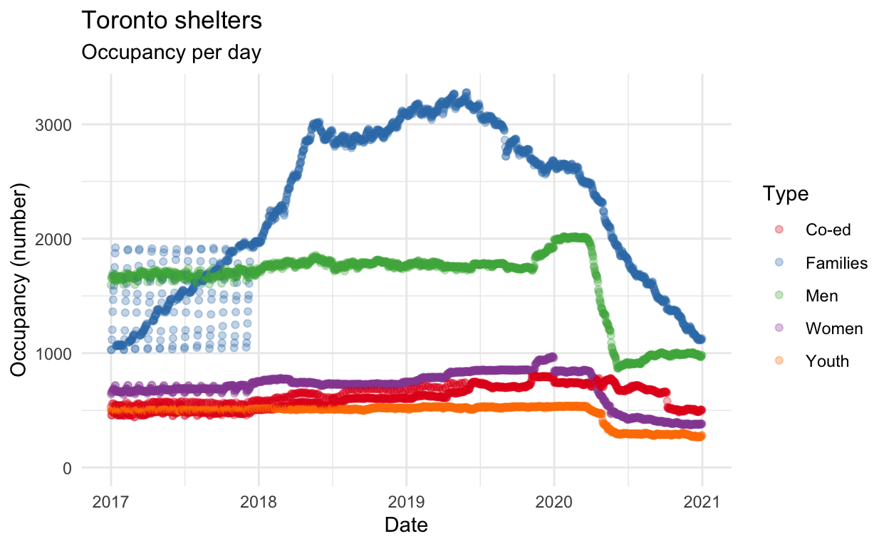
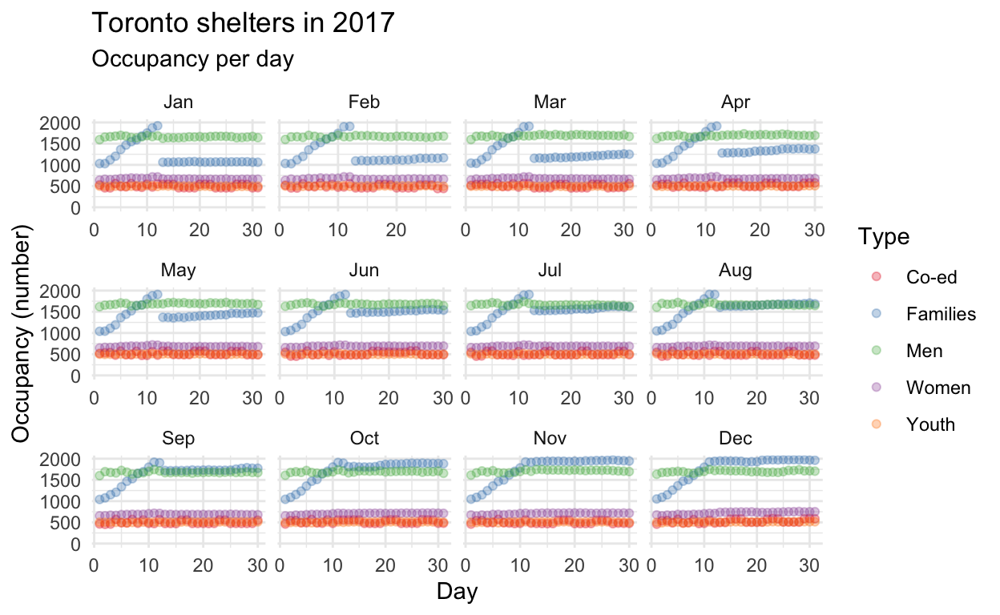
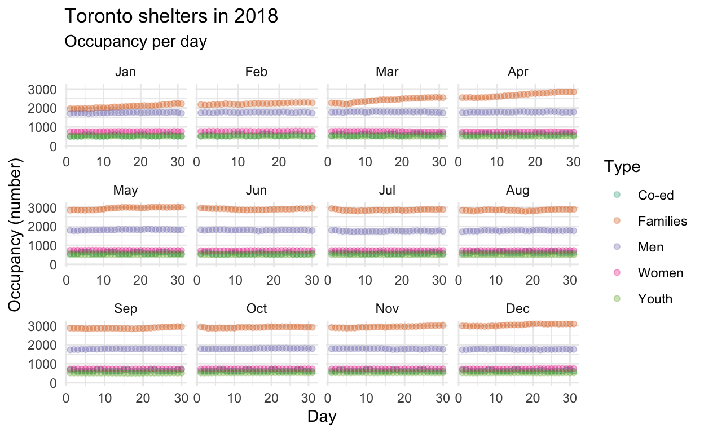
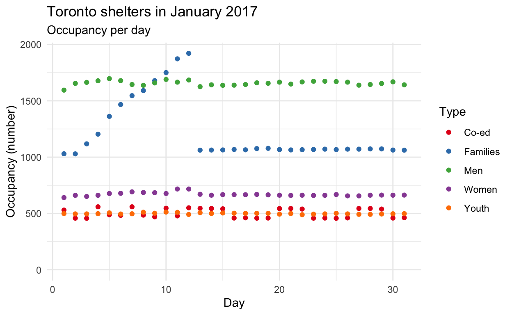
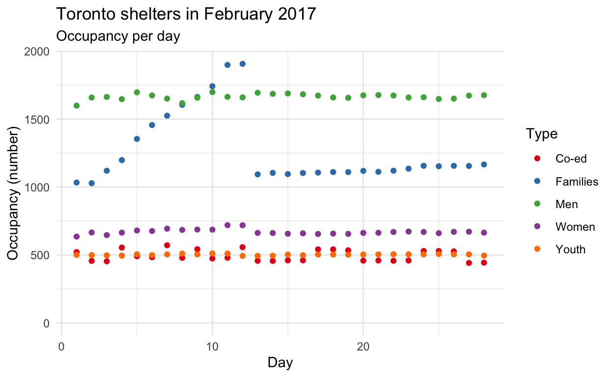
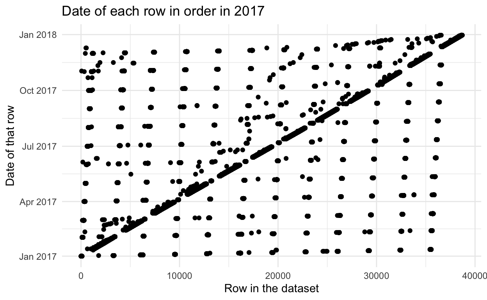
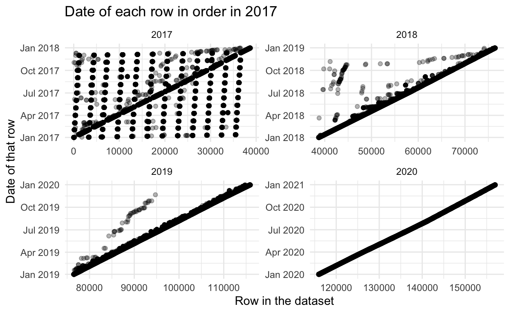
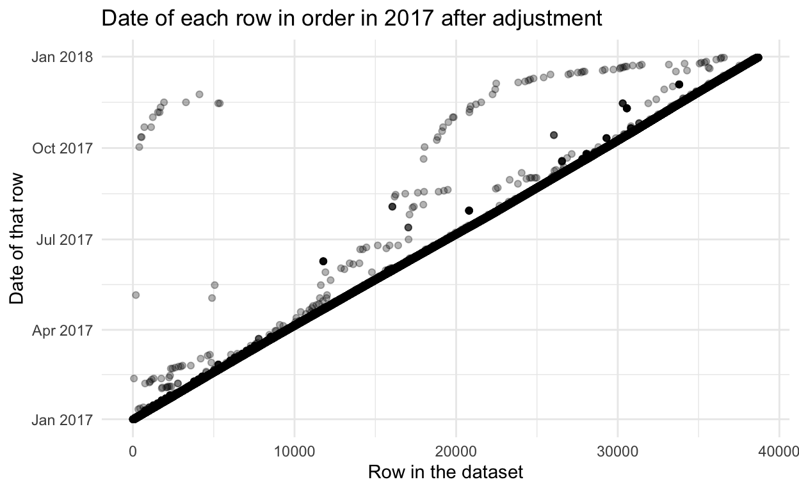

I look at Toronto homelessness numbers between 2017 and 2020. I document and fix an error in the 2017 data.
Homelessness in Toronto was highlighted for the R community in December after the dataset was used in TidyTuesday. That dataset went through to 2019. In this post I expand the dataset through to 2020 to see what has happened since COVID. I also document and attempt to repair a systematic error in the 2017 dataset. I wasn’t able to find this error documented in any TidyTuesday script which highlights the need for the plotting of raw data to be built more thoroughly into the data analysis workflow that we teach. The error also highlights the need for the City of Toronto to be more open in their data management. The result of expanding the dataset through to 2020 and a Bayesian hierarchical model, lead us to estimate that roughly X people are sleeping outside instead of in a shelter.
The datasets are accessed via the opendatatoronto package (Gelfand 2020). This package wraps around the Open Data Toronto data portal and allows direct import of data rather than needing to visit the website. We’ll use the tidyverse to make data manipulation easier (Wickham et al. 2019).
# Get the data
# Based on https://github.com/rfordatascience/tidytuesday/blob/master/data/2020/2020-12-01/readme.md
all_data <-
opendatatoronto::search_packages("Daily Shelter Occupancy") %>%
opendatatoronto::list_package_resources() %>%
dplyr::filter(name %in% c("daily-shelter-occupancy-2017-csv",
"daily-shelter-occupancy-2018-csv",
"daily-shelter-occupancy-2019-csv",
"daily-shelter-occupancy-2020.csv")) %>%
group_split(name) %>% # Don't totally understand how this works
map_dfr(get_resource, .id = "file")
write_csv(all_data, "inputs/raw_data.csv")
Let’s just have a quick look at the data.
# A tibble: 6 x 14
file `_id` OCCUPANCY_DATE ORGANIZATION_NA… SHELTER_NAME
<int> <int> <chr> <chr> <chr>
1 1 1 2017-01-01T00… COSTI Immigrant… COSTI Recep…
2 1 2 2017-01-01T00… Christie Ossing… Christie Os…
3 1 3 2017-01-01T00… Christie Ossing… Christie Os…
4 1 4 2017-01-01T00… Christie Refuge… Christie Re…
5 1 5 2017-01-01T00… City of Toronto Birchmount …
6 1 6 2017-01-01T00… City of Toronto Birkdale Re…
# … with 9 more variables: SHELTER_ADDRESS <chr>,
# SHELTER_CITY <chr>, SHELTER_PROVINCE <chr>,
# SHELTER_POSTAL_CODE <chr>, FACILITY_NAME <chr>,
# PROGRAM_NAME <chr>, SECTOR <chr>, OCCUPANCY <int>,
# CAPACITY <int>The column names aren’t overly nice to type, we’ve got a few columns that we’re not really going to use much and finally a few of the columns have data that are less obvious than they should be. For instance, the ‘file’ tells us the year of the data, but because of the import settings it’s 1, 2… instead of 2017, 2018….
toronto_shelters <-
all_data %>%
janitor::clean_names() %>% # Make the column names easier to type. Thanks Sharla!
mutate(file_year =
case_when(
file == "1" ~ 2017,
file == "2" ~ 2018,
file == "3" ~ 2019,
file == "4" ~ 2020,
TRUE ~ -1)
) %>% # Just make the column easier to deal with
select(-id, -file)
The main issue with the data is the dates. In 2017-2019 (inclusive) they appear to be year-month-day, but for 2020 it seems like month-day-year. The separator is also inconsistent between - and /. We’ll first clean that up, check our guesses, and then get to the main weird thing. We’re going to draw on the lubridate package (Grolemund and Wickham 2011).
library(lubridate)
toronto_shelters <-
toronto_shelters %>%
mutate(occupancy_date = str_remove(occupancy_date, "T[:digit:]{2}:[:digit:]{2}:[:digit:]{2}"),
occupancy_date = str_replace_all(occupancy_date, "/", "-")
) %>% # 1st line removes times (probs don't actually need to do) and 2nd makes the separation consistent
mutate(date = case_when(
file_year == "2020" ~ mdy(occupancy_date, quiet = TRUE),
file_year %in% c("2017", "2018", "2019") ~ ymd(occupancy_date, quiet = TRUE),
TRUE ~ NA_Date_
)
) %>% # The parsing is different depending on whether it's 2017-2019 or 2020. Last line is a catch-all - shouldn't get there.
select(file_year, date, occupancy_date, organization_name:capacity)
Let’s just check that our guess of the date orderings was at least plausible.
toronto_shelters <-
toronto_shelters %>%
separate(occupancy_date, into = c('one', 'two', 'three'), sep = "-", remove = FALSE)
toronto_shelters %>%
filter(file_year %in% c(2017, 2018, 2019)) %>%
count(one)
# A tibble: 3 x 2
one n
<chr> <int>
1 2017 38700
2 2018 37770
3 2019 39446# A tibble: 12 x 2
two n
<chr> <int>
1 01 9747
2 02 8868
3 03 9912
4 04 9600
5 05 9950
6 06 9625
7 07 9850
8 08 9743
9 09 9430
10 10 9694
11 11 9497
12 12 10000# A tibble: 31 x 2
three n
<chr> <int>
1 01 3775
2 02 3796
3 03 3809
4 04 3832
5 05 3832
6 06 3840
7 07 3840
8 08 3798
9 09 3790
10 10 3778
# … with 21 more rowstoronto_shelters %>%
filter(file_year == 2020) %>%
count(one)
# A tibble: 12 x 2
one n
<chr> <int>
1 01 3503
2 02 3277
3 03 3555
4 04 3562
5 05 3671
6 06 3534
7 07 3601
8 08 3355
9 09 3210
10 10 3317
11 11 3195
12 12 3281toronto_shelters %>%
filter(file_year == 2020) %>%
count(two)
# A tibble: 31 x 2
two n
<chr> <int>
1 01 1352
2 02 1352
3 03 1353
4 04 1353
5 05 1346
6 06 1343
7 07 1344
8 08 1344
9 09 1345
10 10 1345
# … with 21 more rowstoronto_shelters %>%
filter(file_year == 2020) %>%
count(three)
# A tibble: 1 x 2
three n
<chr> <int>
1 2020 41061So that’s fine.
Let’s now also check that the year implied by the date matches the year implied by the file.
# A tibble: 0 x 18
# … with 18 variables: file_year <dbl>, date <date>,
# occupancy_date <chr>, one <chr>, two <chr>,
# three <chr>, organization_name <chr>,
# shelter_name <chr>, shelter_address <chr>,
# shelter_city <chr>, shelter_province <chr>,
# shelter_postal_code <chr>, facility_name <chr>,
# program_name <chr>, sector <chr>, occupancy <int>,
# capacity <int>, check_year <lgl>toronto_shelters <-
toronto_shelters %>%
select(-occupancy_date, -one, -two, -three, -file_year)
That’s also fine. So we remove unnecessary columns.
The super weird thing is that they’re not in order in the raw data. We checked by splitting them into pieces (day, month, year) and the counts were okay. Nonetheless, before we move on, we should plot the raw data to see if there’s anything else going on. (Here, students seem to get confused what ‘raw’ means; I’m using it to refer to as close to the original dataset as possible, so no sums, or averages, etc, if possible. In my case, the data are too disperse. At the very least, you need to plot the data that you’re going to be modelling.)
# Based on Lisa Lendway: https://github.com/llendway/tidy_tuesday_in_thirty/blob/main/2020_12_01_tidy_tuesday.Rmd
toronto_shelters_by_day <-
toronto_shelters %>%
tidyr::drop_na(occupancy, capacity) %>% # We only want rows that have data for both occupancy and capacity
group_by(date, sector) %>% # We want to know the occupancy by date and sector
summarise(occupancy = sum(occupancy),
capacity = sum(capacity),
usage = occupancy / capacity, .groups = 'drop')
We are interested in availability of shelter spots in Toronto on the basis of sector for each day. Different sectors focus on different folks: Co-ed, Families, Men, Women, Youth. So for each day for each sector we have a proportion (note: horrifyingly >1 is possible). In the notes to the data we’re told that the capacity in 2020 may not be accurate, so for this chart we’ll just focus on 2017-2019 (inclusive).
# Graph 2017-2019 (inc)
toronto_shelters_by_day %>%
filter(year(date) != "2020") %>%
ggplot(aes(x = date, y = usage, color = sector)) +
geom_point(aes(group = sector), alpha = 0.3) +
scale_y_continuous(limits = c(0, NA)) +
labs(color = "Type",
x = "Date",
y = "Occupancy rate",
title = "Toronto shelters",
subtitle = "Occupancy per day") +
theme_minimal() +
scale_color_brewer(palette = "Set1")

That one looks okay, but we’ll see the problem immediately when we plot the raw number occupied (we can bring this through to include 2020 as it’s not to do with capacity).
toronto_shelters_by_day %>%
ggplot(aes(x = date, y = occupancy, color = sector)) +
geom_point(aes(group = sector), alpha = 0.3) +
scale_y_continuous(limits = c(0, NA)) +
labs(color = "Type",
x = "Date",
y = "Occupancy (number)",
title = "Toronto shelters",
subtitle = "Occupancy per day") +
theme_minimal() +
scale_color_brewer(palette = "Set1")

We can see that our earlier modified data were hiding the problem. Let’s focus on 2017, as that’s where the issue is and facet by month.
toronto_shelters_by_day %>%
filter(year(date) == 2017) %>%
ggplot(aes(x = day(date), y = occupancy, color = sector)) +
geom_point(aes(group = sector), alpha = 0.3) +
scale_y_continuous(limits = c(0, NA)) +
labs(color = "Type",
x = "Day",
y = "Occupancy (number)",
title = "Toronto shelters in 2017",
subtitle = "Occupancy per day") +
facet_wrap(vars(month(date, label = TRUE)),
scales = "free_x") +
theme_minimal() +
scale_color_brewer(palette = "Set1")

Just to check, let’s plot the same for 2018.
toronto_shelters_by_day %>%
filter(year(date) == 2018) %>%
ggplot(aes(x = day(date), y = occupancy, color = sector)) +
geom_point(aes(group = sector), alpha = 0.3) +
scale_y_continuous(limits = c(0, NA)) +
labs(color = "Type",
x = "Day",
y = "Occupancy (number)",
title = "Toronto shelters in 2018",
subtitle = "Occupancy per day") +
facet_wrap(vars(month(date, label = TRUE)),
scales = "free_x") +
theme_minimal() +
scale_color_brewer(palette = "Dark2")

So we can see what we expect in 2017. To start, focus on Janaury 2017 and see if that makes it clearer what is going on.
toronto_shelters_by_day %>%
filter(year(date) == 2017) %>%
filter(month(date) == 1) %>%
ggplot(aes(x = day(date), y = occupancy, color = sector)) +
geom_point(aes(group = sector)) +
scale_y_continuous(limits = c(0, NA)) +
labs(color = "Type",
x = "Day",
y = "Occupancy (number)",
title = "Toronto shelters in January 2017",
subtitle = "Occupancy per day") +
theme_minimal() +
scale_color_brewer(palette = "Set1")

This perhaps gives us some idea of what is going on. Let’s just check February and see if it looks similar.
toronto_shelters_by_day %>%
filter(year(date) == 2017) %>%
filter(month(date) == 2) %>%
ggplot(aes(x = day(date), y = occupancy, color = sector)) +
geom_point(aes(group = sector)) +
scale_y_continuous(limits = c(0, NA)) +
labs(color = "Type",
x = "Day",
y = "Occupancy (number)",
title = "Toronto shelters in February 2017",
subtitle = "Occupancy per day") +
theme_minimal() +
scale_color_brewer(palette = "Set1")

So we’ve clearly got a problem with the first twelve days of the month. We noted at the start that when you look at the data it’s a bit odd in that it’s not in order. Let’s take another look at that by going back to the data as it was given to us (as opposed to the data by day that we’ve been using.
toronto_shelters %>%
mutate(counter = 1:nrow(toronto_shelters)) %>%
filter(year(date) == 2017) %>%
ggplot(aes(x = counter, y = date)) +
geom_point() +
labs(x = "Row in the dataset",
y = "Date of that row",
title = "Date of each row in order in 2017") +
theme_minimal()

Although there’s no rule that says the dataset has to be in order of the date, if it were, then all the points would lie on the diagonal line. We have a lot of deviation from that. To get a sense of what we’re expecting let’s look at all four years
toronto_shelters %>%
mutate(counter = 1:nrow(toronto_shelters)) %>%
ggplot(aes(x = counter, y = date)) +
geom_point(alpha = 0.3) +
facet_wrap(vars(year(date)),
scales = "free") +
labs(x = "Row in the dataset",
y = "Date of that row",
title = "Date of each row in order in 2017") +
theme_minimal()

So 2020 is as we’d expect. 2019 has a few odd situations, but not too many. 2018 has a small cluster early in the dataset and then possibly something systematic toward the middle. But it’s clear that 2017 has a large number of systematic issues.
In general, I think that in 2017 the first 12 days are the wrong way around, i.e we think it’s year-month-day, but it’s actually year-day-month, but there are exceptions. As a first pass, let’s just try to flip those first 12 days of each month and see if that helps. It’ll be fairly blunt, but hopefully gets us somewhere.
toronto_shelters <-
toronto_shelters %>%
mutate(
year = year(date),
month = month(date),
day = day(date),
date = as.character(date),
changed_date = if_else(
date %in% c("2017-02-01", "2017-03-01", "2017-04-01", "2017-05-01", "2017-06-01", "2017-07-01", "2017-08-01", "2017-09-01", "2017-10-01", "2017-11-01", "2017-12-01", "2017-01-02", "2017-03-02", "2017-04-02", "2017-05-02", "2017-06-02", "2017-07-02", "2017-08-02", "2017-09-02", "2017-10-02", "2017-11-02", "2017-12-02", "2017-01-03", "2017-02-03", "2017-04-03", "2017-05-03", "2017-06-03", "2017-07-03", "2017-08-03", "2017-09-03", "2017-10-03", "2017-11-03", "2017-12-03", "2017-01-04", "2017-02-04", "2017-03-04", "2017-05-04", "2017-06-04", "2017-07-04", "2017-08-04", "2017-09-04", "2017-10-04", "2017-11-04", "2017-12-04", "2017-01-05", "2017-02-05", "2017-03-05", "2017-04-05", "2017-06-05", "2017-07-05", "2017-08-05", "2017-09-05", "2017-10-05", "2017-11-05", "2017-12-05", "2017-01-06", "2017-02-06", "2017-03-06", "2017-04-06", "2017-05-06", "2017-07-06", "2017-08-06", "2017-09-06", "2017-10-06", "2017-11-06", "2017-12-06", "2017-01-07", "2017-02-07", "2017-03-07", "2017-04-07", "2017-05-07", "2017-06-07", "2017-08-07", "2017-09-07", "2017-10-07", "2017-11-07", "2017-12-07", "2017-01-08", "2017-02-08", "2017-03-08", "2017-04-08", "2017-05-08", "2017-06-08", "2017-07-08", "2017-09-08", "2017-10-08", "2017-11-08", "2017-12-08", "2017-01-09", "2017-02-09", "2017-03-09", "2017-04-09", "2017-05-09", "2017-06-09", "2017-07-09", "2017-08-09", "2017-10-09", "2017-11-09", "2017-12-09", "2017-01-10", "2017-02-10", "2017-03-10", "2017-04-10", "2017-05-10", "2017-06-10", "2017-07-10", "2017-08-10", "2017-09-10", "2017-11-10", "2017-12-10", "2017-01-11", "2017-02-11", "2017-03-11", "2017-04-11", "2017-05-11", "2017-06-11", "2017-07-11", "2017-08-11", "2017-09-11", "2017-10-11", "2017-12-11", "2017-01-12", "2017-02-12", "2017-03-12", "2017-04-12", "2017-05-12", "2017-06-12", "2017-07-12", "2017-08-12", "2017-09-12", "2017-10-12", "2017-11-12"),
paste(year, day, month, sep = "-"),
paste(year, month, day, sep = "-"),
),
changed_date = ymd(changed_date)
) %>%
select(-year, -month, -day)
Now let’s take a look.
toronto_shelters %>%
mutate(counter = 1:nrow(toronto_shelters)) %>%
filter(year(date) == 2017) %>%
ggplot(aes(x = counter, y = changed_date)) +
geom_point(alpha = 0.3) +
labs(x = "Row in the dataset",
y = "Date of that row",
title = "Date of each row in order in 2017 after adjustment") +
theme_minimal()

We can see that’s almost entirely taken care of the systematic differences. However it’s probably a little blunt. For instance, notice there are now no entries below the diagonal.
…With a laptop, some free software, and a cup of coffee, I can examine what ought to seem like a staggering amount of information. …I sit here at home, surveying the scope of what’s being inflicted on people across the country and around the world as this disease spreads. … … People sometimes think (or complain) that working with quantitative data like this inures you to the reality of the human lives that lie behind the numbers. Numbers and measures are crude; they pick up the wrong things; they strip out the meaning of what’s happening to real people; they make it easy to ignore what can’t be counted. There’s something to those complaints. But it’s mostly a lazy critique. In practice, I find that far from distancing you from questions of meaning, quantitative data forces you to confront them. The numbers draw you in. Working with data like this is an unending exercise in humility, a constant compulsion to think through what you can and cannot see, and a standing invitation to understand what the measures really capture—what they mean, and for whom. …"
Kieran Healy, 2020, The Kitchen Counter Observatory, 21 May. https://kieranhealy.org/blog/archives/2020/05/21/the-kitchen-counter-observatory/
Gelfand, Sharla. 2020. Opendatatoronto: Access the City of Toronto Open Data Portal. https://CRAN.R-project.org/package=opendatatoronto.
Grolemund, Garrett, and Hadley Wickham. 2011. “Dates and Times Made Easy with lubridate.” Journal of Statistical Software 40 (3): 1–25. https://www.jstatsoft.org/v40/i03/.
Wickham, Hadley, Mara Averick, Jennifer Bryan, Winston Chang, Lucy D’Agostino McGowan, Romain François, Garrett Grolemund, et al. 2019. “Welcome to the tidyverse.” Journal of Open Source Software 4 (43): 1686. https://doi.org/10.21105/joss.01686.